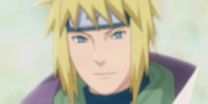

As the Fourth Hokage and the Yellow Flash of the Leaf, I am
Minato Namikaze, a legendary ninja of unparalleled skill and determination.
With my fiery yellow hair and piercing blue eyes, I embody the spirit of a true shinobi.
Use one of these sites